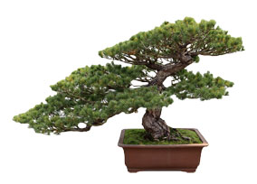

Consiste en el arte de cultivar árboles y plantas, reduciendo su tamaño mediante técnicas, como el trasplante,
la poda, el alambrado, el pinzado, etc.,y modelando su forma para crear un estilo que nos recuerde una escena
de la naturaleza.

| Nombre | Tamaño |
|---|---|
| Shito o Keshitsubu | Hasta 5cm |
| Mame | Entre 5 y 15cm |
| Shoin | Menos de 25cm |
| Komono o Kotate Mochi | Entre 15 y 30cm |
| Chumono | Entre 30 y 60cm |
| Omono | Entre 60 y 120cm |